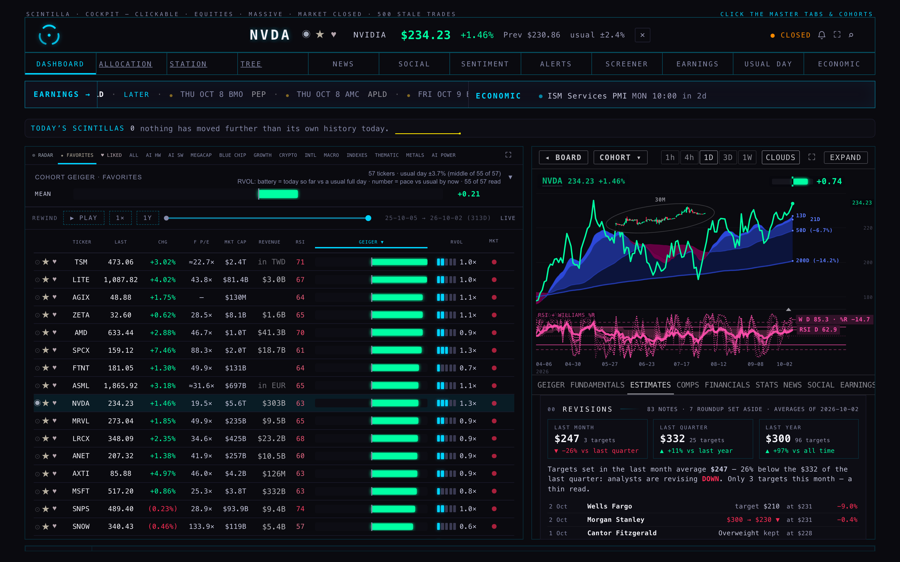
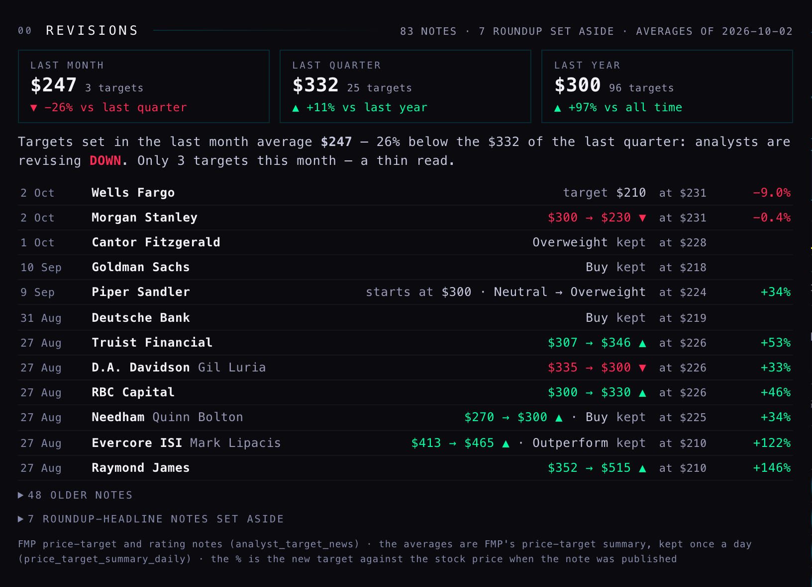
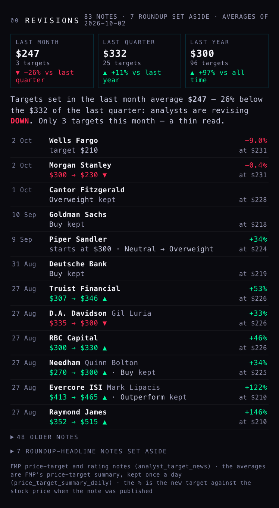
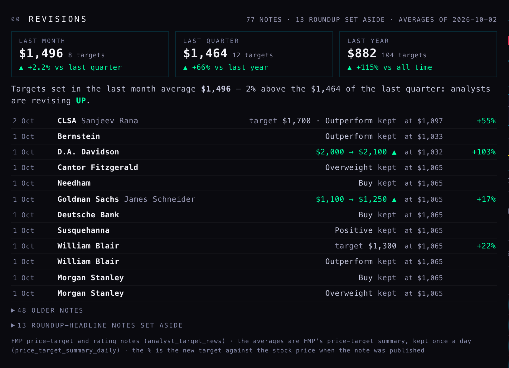
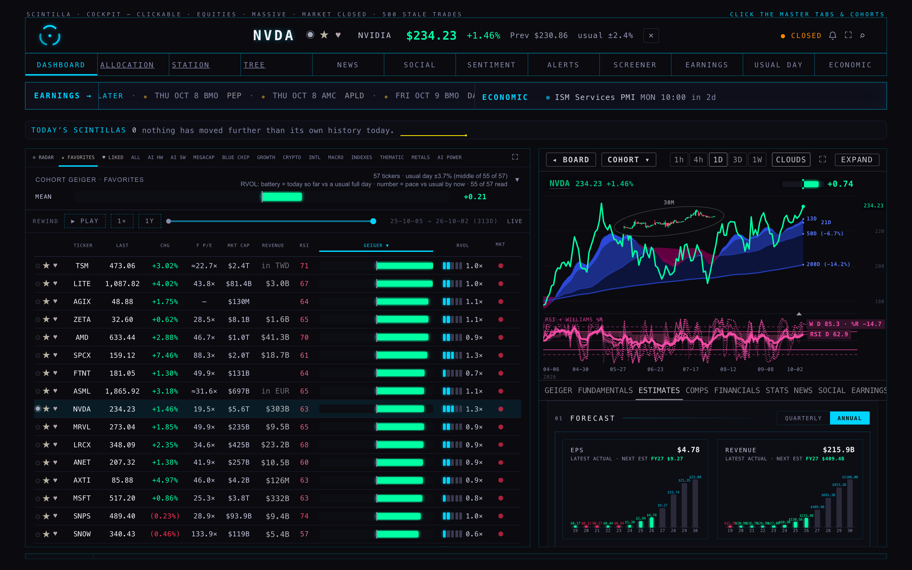

The REVISIONS strip — who moved a target, from what to what, at what price
R2 · Part C · 2 Oct 2026, 20:53–22:30 ET · branch hub/r2-revisions-20261002 · not deployed to the Hub (the coordinator merges) · the nightly job is live but not scheduled
01 · WHAT YOU WILL SEE
Open any company, press ESTIMATES. The tab now starts with 00 REVISIONS: three boxes with the average price target analysts set in the last month, the last quarter and the last year, each with an arrow against the next longer window; one sentence saying which way they are revising; then the analysts' notes, newest first — date · firm · analyst · old target → new target (or old rating → new rating) · the stock price that day · what the new target implies against that price. Every line opens the original note.

Nvidia, the Hub at 1680 wide (headless, device scale 2). The strip sits at the top of ESTIMATES, bottom right; the tab scrolls down to the forecast sections that were there before.

The strip itself (Nvidia), unrolled — the tab scrolls, so the close-up shows it whole. R1's case is the first box: 3 targets last month averaging $247 against 25 last quarter averaging $332 — a revision DOWN the consensus number hides. Red = down, green = up.

The same at phone width (390): each note takes two lines — who on the first, the move and the price on the second.

Micron: CLSA $1,700 on 2 Oct with the stock at $1,097 (+55%) — R1's other case — and D.A. Davidson $2,000 → $2,100. Micron's month and quarter agree (+2.2%): no revision down there.

Before (the live code, a389c7c): ESTIMATES opened on 01 FORECAST and showed none of this.
02 · WHAT THE JOB FOUND TONIGHT
- 39,530 analyst notes kept for 453 of the Hub's 454 stocks — 19,267 price-target notes and 20,263 rating notes (the newest 50 of each kind per stock; for thinly covered names that reaches back to 2020). [MEASURED, 21:02 ET]
- In the last 30 days: 1,970 notes on 339 stocks — 350 target raises, 250 target cuts, 67 upgrades, 62 downgrades. [MEASURED, roundup headlines left out]
- 56 of 307 stocks have a last-month average target more than 10% below the last quarter's. The steepest, with at least 3 targets this month: WULF −35% (3 against 8), CORZ −26% (3/8), NVDA −26% (3/25), OKLO −22% (3/6), PCG −17%, NXT −17%, CTVA −16%, CIFR −12%. [MEASURED]
- The month / quarter / year averages were stored for 452 stocks (FMP has none for CRML and SIDU; CRML has no notes at all). One row per stock per New York day, so from tomorrow the history builds itself.
- One nightly pass, run by hand at 21:02 ET: it read 3 pages of each all-market feed (300 notes each), found 98 target and 97 rating notes for our stocks — all already stored by the backfill minutes earlier, so 0 new, as expected — and the summary for all 454 stocks. 4.8 seconds, 0 errors. [MEASURED]
Which stocks: the Hub's own member list (cohorts, 613 names) narrowed to active stocks — the 364 marked "stock" plus 90 core names that carry no type at all (AAPL, NVDA, MU, MSFT …), funds and crypto out = 454. R1 counted 364 because it missed those 90.
03 · HOW IT WORKS, IN PLAIN WORDS
| Piece | What it is | What it does |
|---|
| The collector analyst-revisions | A small program on Supabase (our database host), deployed tonight, not yet on a timer. | Each night: reads FMP's two "latest notes" feeds for the whole market, page by page, until it reaches notes it already has; keeps the ones on our stocks; then asks FMP for each stock's month / quarter / year average target. About 460 FMP calls a night. It reads the FMP key from the database the way the existing analyst job does and never prints it. |
| The notebook of notes analyst_target_news | New table: one line per analyst note — stock, time, target or rating, firm, analyst, old/new rating, the price that day, headline, link. | Written only by the collector; read by the ESTIMATES tab. Without it the strip is empty. |
| The daily averages price_target_summary_daily | New table: one line per stock per day — how many targets and their average, last month / quarter / year / all time. | Feeds the three boxes; keeps a history so a slide in the average can be drawn later. |
| The strip | The top of ESTIMATES on the Hub page. | Reads the two tables for the open stock (cached 10 minutes). The old target comes from the headline ("raised to $2,100 from $2,000") or else from the same firm's previous note. FMP's own DCF number and its letter grades stay off the Hub. |
04 · WHAT COULD BE WRONG
- FMP sometimes files a note under the wrong stock or firm. Weekly roundup headlines ("Wall Street's top 10 stock calls this week") are filed under every stock the list names — on Nvidia, seven firms "moved" it on 11 Sep in one headline, e.g. "Wells Fargo Overweight → Underweight". These 613 notes (1.6%, on 66 stocks) are now set aside behind a closed fold, not deleted. The pattern only catches the roundup wording seen so far.
- Nvidia, 2 Oct: two targets (Wells Fargo $210, Morgan Stanley $230) both come from one headline, "Morgan Stanley Renames NVIDIA to Top Pick" — a top pick at $230 with the stock at $231 is odd. The strip shows FMP's rows as given, each linked to its source; it cannot check them against a second provider (Massive's analyst feed is not on our plan).
- The three averages are FMP's own counts. A month with 3 targets swings hard — the sentence says "a thin read" when there are 3 or fewer.
- "Old target" is missing when the headline does not say it and the firm's previous note is older than the 50 we keep; FMP spells some firms two ways ("D.A. Davidson" / "DA Davidson") — matched now, but a third spelling would split a note into two lines.
- The price that day is FMP's figure; notes from before a stock split show the target as printed then.
05 · WHAT WAS NOT DONE
- No timer was created — the coordinator schedules it after review. Recommended: 30 1 * * 2-6 (01:30 UTC Tuesday–Saturday = 21:30 New York Monday–Friday, 20:30 in winter) calling analyst-revisions?mode=pass; optionally 0 13 * * 1-5 calling ?mode=pass&summary=0 so the morning's notes show by the open (6 FMP calls).
- The Hub is not deployed; the branch is pushed for the coordinator to merge.
- The DCF input pack (R1 section 03, the next step) was not started, as the brief said.
- The older "05 Rating changes" section further down ESTIMATES (from the existing analyst_grades table) still shows; it overlaps the strip. Not removed — not my call.
- Pictures were taken for Nvidia and Micron only (both widths); other stocks were checked through the data, not by eye.
Undo: /Users/alanharvey/SCINTILLA 0.5/_archive/backend-fix-20260928/ROLLBACK-analyst_target_news-20261002.sql and ROLLBACK-price_target_summary_daily-20261002.sql drop exactly the two new tables; nothing else was changed. Tests: the Hub suite went from 1,740 tests with the 5 known failures to 1,758 with the same 5; the new file has 18, all passing, no network.
06 · DECISIONS FOR ALAN
1 · Roundup headlines: set aside (as built) or dropped? Recommendation: keep them set aside behind the fold. They are 1.6% of notes and sometimes do belong to the stock; hiding them by default keeps the strip honest without losing anything.
2 · A morning run as well as the nightly one? Recommendation: yes — 6 FMP calls at 09:00 New York so the notes written before the open are on the strip when the market opens; the nightly run keeps the averages.
3 · Should a revision DOWN become a board mark or an alert? Tonight 56 stocks show this month's average target more than 10% below the quarter's. Recommendation: not yet — let a week of daily averages build first; the steepest names tonight all rest on 3 targets.